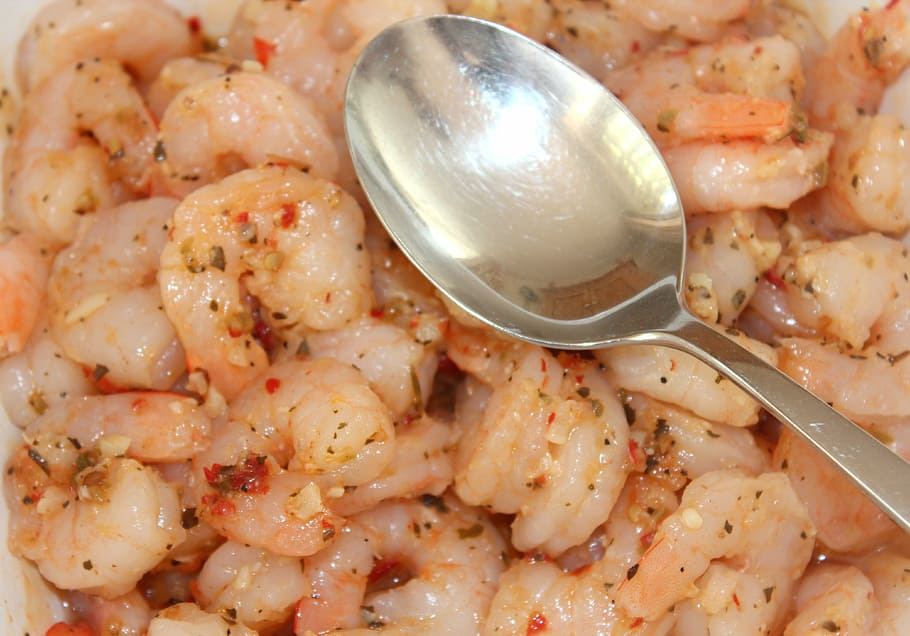

Odin Recipes

Seasoned Steamed Shrimp
Description
A nice, quick, and tasty seafood dish to make.
Ingredients
- 1/2 cup water
- 1/2 cup white vinegar
- 2 tbsp seafood seasoning
- 1 lb. shrimp
Steps
- Boil the water, vingear, and seasoning.
- Add the shrimp and stir.
- Reduce the heat, cover, and steam for 3-5 min.
- Drain the water.